Which of the following is a purpose of the Amateur Radio Service as stated in the FCC rules and regulations?
Advancing skills in the technical and communication phases of the radio art
Which agency regulates and enforces the rules for the Amateur Radio Service in the United States?
The FCC
Which part of the FCC regulations contains the rules governing the Amateur Radio Service?
Part 97
Which of the following meets the FCC definition of harmful interference?
That which seriously degrades, obstructs, or repeatedly interrupts a radio communication service operating in accordance with the Radio Regulations
Which of the following is a purpose of the Amateur Radio Service rules and regulations as defined by the FCC?
Enhancing international goodwill
Which of the following services are protected from interference by amateur signals under all circumstances?
Radionavigation Service
What is the FCC Part 97 definition of telemetry?
A one-way transmission of measurements at a distance from the measuring instrument
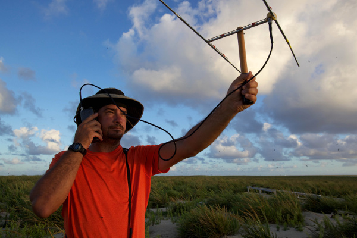
Which of the following entities recommends transmit/receive channels and other parameters for auxiliary and repeater stations?
Frequency Coordinator
Who selects a Frequency Coordinator?
Amateur operators in a local or regional area whose stations are eligible to be auxiliary or repeater stations
What is the FCC Part 97 definition of an amateur station?
A station in the Amateur Radio Service consisting of the apparatus necessary for carrying on radio communications
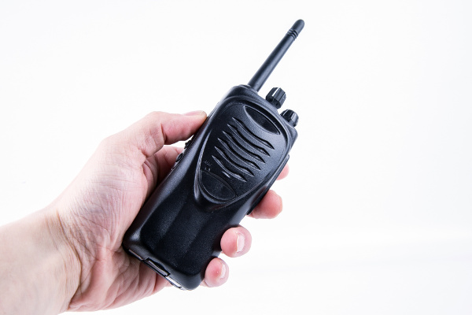
When is willful interference to other amateur radio stations permitted?
At no time
Which of the following is a permissible use of the Amateur Radio Service?
Allowing a person to conduct radio experiments and to communicate with other licensed hams around the world
What is the FCC Part 97 definition of telecommand?
A one-way transmission to initiate, modify or terminate functions of a device at a distance
What must you do if you are operating on the 23 cm band and learn that you are interfering with a radiolocation station outside the United States?
Stop operating or take steps to eliminate the harmful interference
What is the ITU?
A United Nations agency for information and communication technology issues
 International Telecommunication Union
International Telecommunication Union
Why are the frequency assignments for some U.S. Territories different from those in the 50 U.S. States?
Some U. S. Territories are located in ITU regions other than region 2
Which frequency is within the 6 meter band?
52.525 MHz
Which amateur band are you using when your station is transmitting on 146.52 MHz?
2 meter band
Which 70 cm frequency is authorized to a Technician Class license holder operating in ITU Region 2?
443.350 MHz
Which 23 cm frequency is authorized to a Technician Class licensee?
1296 MHz
What amateur band are you using if you are transmitting on 223.50 MHz?
1.25 meter band
Which of the following is a result of the fact that the amateur service is secondary in some portions of the 70 cm band?
U.S. amateurs may find non-amateur stations in the bands, and must avoid interfering with them
Why should you not set your transmit frequency to be exactly at the edge of an amateur band or sub-band?
To allow for calibration error in the transmitter frequency display
So that modulation sidebands do not extend beyond the band edge
To allow for transmitter frequency drift
History of AM Radio
How AM radio works
How AM and FM radio works
Which of the bands above 30 MHz that are available to Technician Class operators have mode-restricted sub-bands?
The 6 meter, 2 meter, and 1.25 meter bands
What emission modes are permitted in the mode-restricted sub-bands at 50.0 to 50.1 MHz and 144.0 to 144.1 MHz?
CW only
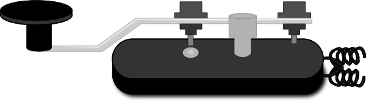 Continuous wave
Why are frequency assignments for U.S. stations operating maritime mobile not the same everywhere in the world?
Amateur frequency assignments can vary among the three ITU regions
Which emission may be used between 219 and 220 MHz?
Data
Which type of call sign has a single letter in both its prefix and suffix?
Special event
Which of the following is a valid US amateur radio station call sign?
W3ABC
What types of international communications are permitted by an FCC-licensed amateur station?
Communications incidental to the purposes of the amateur service and remarks of a personal character
(Don't sell stuff, swear, broadcast music, etc. Just talk!)
When are you allowed to operate your amateur station in a foreign country?
When the foreign country authorizes it
Which of the following is a vanity call sign which a technician class amateur operator might select if available?
K1XXX
From which of the following locations may an FCC-licensed amateur station transmit, in addition to places where the FCC regulates communications?
From any vessel or craft located in international waters and documented or registered in the United States
What may result when correspondence from the FCC is returned as undeliverable because the grantee failed to provide the correct mailing address?
Revocation of the station license or suspension of the operator license
What is the normal term for an FCC-issued primary station/operator amateur radio license grant?
Ten years
What is the grace period following the expiration of an amateur license within which the license may be renewed?
Two years
How soon after passing the examination for your first amateur radio license may you operate a transmitter on an amateur service frequency?
As soon as your operator/station license grant appears in the FCC’s license database
If your license has expired and is still within the allowable grace period, may you continue to operate a transmitter on amateur service frequencies?
No, transmitting is not allowed until the FCC license database shows that the license has been renewed
Who may select a desired call sign under the vanity call sign rules?
Any licensed amateur
For which licenses classes are new licenses currently available from the FCC?
Technician, General, Amateur Extra
Who may select a vanity call sign for a club station?
Only the person named as trustee on the club station license grant
With which countries are FCC-licensed amateur stations prohibited from exchanging communications?
Any country whose administration has notified the ITU that it objects to such communications
On which of the following occasions may an FCC-licensed amateur station exchange messages with a U.S. military station?
During an Armed Forces Day Communications Test
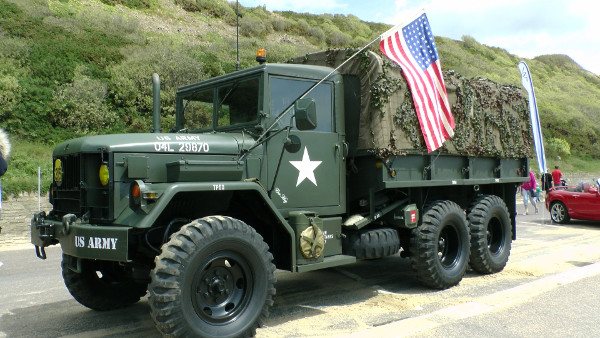
When is the transmission of codes or ciphers that hide the meaning of a message allowed by an amateur station?
Only when transmitting control commands to space stations or radio control craft
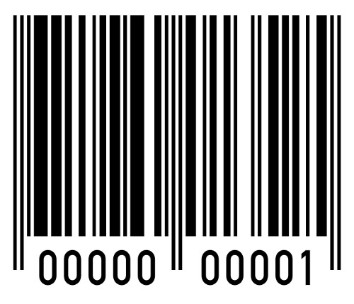
What is the only time an amateur station is authorized to transmit music?
When incidental to an authorized retransmission of manned spacecraft communications
When may amateur radio operators use their stations to notify other amateurs of the availability of equipment for sale or trade?
When the equipment is normally used in an amateur station and such activity is not conducted on a regular basis
What, if any, are the restrictions concerning transmission of language that may be considered indecent or obscene?
Any such language is prohibited
What types of amateur stations can automatically retransmit the signals of other amateur stations?
Auxiliary, repeater, or space stations
In which of the following circumstances may the control operator of an amateur station receive compensation for operating the station?
When the communication is incidental to classroom instruction at an educational institution
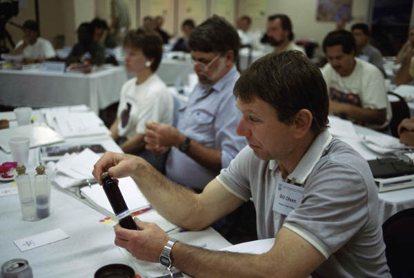
Under which of the following circumstances are amateur stations authorized to transmit signals related to broadcasting, program production, or news gathering, assuming no other means is available?
Only where such communications directly relate to the immediate safety of human life or protection of property
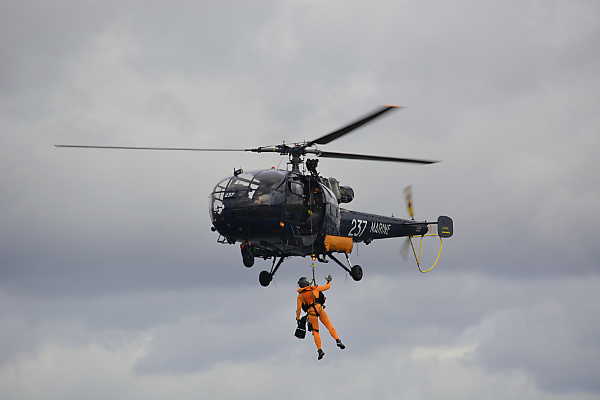
What is the meaning of the term “broadcasting” in the FCC rules for the amateur services?
Transmissions intended for reception by the general public
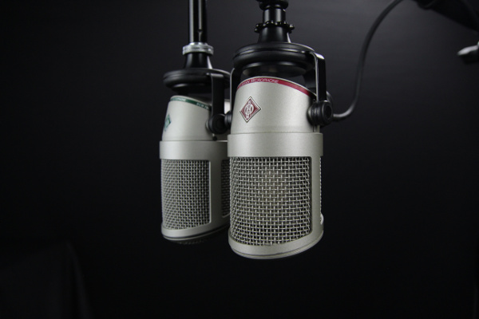
When may an amateur station transmit without identifying?
When transmitting signals to control a model craft
Under which of the following circumstances may an amateur radio station engage in broadcasting?
When transmitting code practice, information bulletins, or transmissions necessary to provide emergency communications
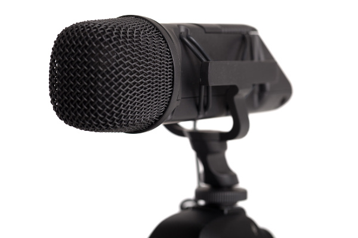
When is an amateur station permitted to transmit without a control operator?
Never
Who may a station licensee designate to be the control operator of an amateur station?
Only a person for whom an amateur operator/primary station license grant appears in the FCC database or who is authorized for alien reciprocal operation
Who must designate the station control operator?
The station licensee
What determines the transmitting privileges of an amateur station?
The class of operator license held by the control operator
What is an amateur station control point?
The location at which the control operator function is performed
Under what type of control do APRS network digipeaters operate?
Automatic
When the control operator is not the station licensee, who is responsible for the proper operation of the station?
The control operator and the station licensee are equally responsible
Which of the following is an example of automatic control?
Repeater operation
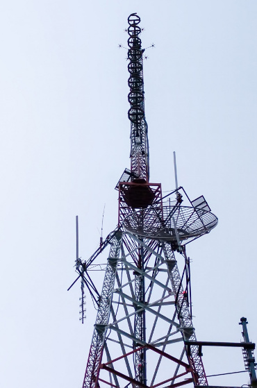
What type of control is being used when the control operator is at the control point?
Local control
Which of the following is an example of remote control as defined in Part 97?
Operating the station over the Internet
Who does the FCC presume to be the control operator of an amateur station, unless documentation to the contrary is in the station records?
The station licensee
When, under normal circumstances, may a Technician Class licensee be the control operator of a station operating in an exclusive Extra Class operator segment of the amateur bands?
At no time
What type of identification is being used when identifying a station on the air as Race Headquarters?
Tactical call sign
When using tactical identifiers such as “Race Headquarters” during a community service net operation, how often must your station transmit the station’s FCC-assigned call sign?
At the end of each communication and every ten minutes during a communication
When is an amateur station required to transmit its assigned call sign?
At least every 10 minutes during and at the end of a communication
Which of the following is an acceptable language to use for station identification when operating in a phone sub-band?
The English language
What method of call sign identification is required for a station transmitting phone signals?
Send the call sign using CW or phone emission
Which of the following formats of a self-assigned indicator is acceptable when identifying using a phone transmission?
KL7CC stroke W3
KL7CC slant W3
KL7CC slash W3
Which of the following restrictions apply when a non-licensed person is allowed to speak to a foreign station using a station under the control of a Technician Class control operator?
The foreign station must be one with which the U.S. has a third party agreement
Which indicator is required by the FCC to be transmitted after a station call sign?
/KT, /AE or /AG when using new license privileges earned by CSCE while waiting for an upgrade to a previously issued license to appear in the FCC license database
Certificate of Successful Completion of Examination
What type of amateur station simultaneously retransmits the signal of another amateur station on a different channel or channels?
Repeater station
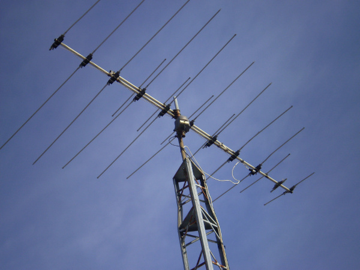
Who is accountable should a repeater inadvertently retransmit communications that violate the FCC rules?
The control operator of the originating station
To which foreign stations do the FCC rules authorize the transmission of non-emergency third party communications?
Any station whose government permits such communications
How many persons are required to be members of a club for a club station license to be issued by the FCC?
At least 4
When must the station licensee make the station and its records available for FCC inspection?
At any time upon request by an FCC representative
What is the most common repeater frequency offset in the 2 meter band?
Plus or minus 600 kHz
What is the national calling frequency for FM simplex operations in the 70 cm band?
446.000 MHz
What is a common repeater frequency offset in the 70 cm band?
Plus or minus 5 MHz
What is an appropriate way to call another station on a repeater if you know the other station's call sign?
Say the station's call sign then identify with your call sign
(The order is like saying, "Hey Bob, this is Jill", but with call signs).
How should you respond to a station calling CQ?
Transmit the other station’s call sign followed by your call sign
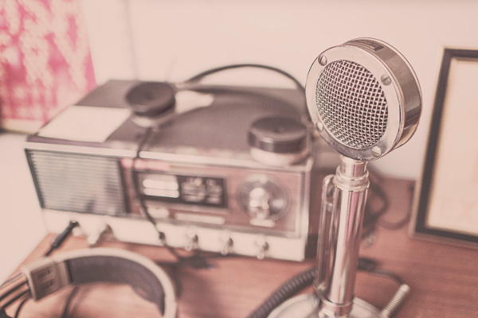
What must an amateur operator do when making on-air transmissions to test equipment or antennas?
Properly identify the transmitting station
Which of the following is true when making a test transmission?
Station identification is required at least every ten minutes during the test and at the end of the test
What is the meaning of the procedural signal “CQ”?
Calling any station
What brief statement is often transmitted in place of “CQ” to indicate that you are listening on a repeater?
Your call sign
What is a band plan, beyond the privileges established by the FCC?
A voluntary guideline for using different modes or activities within an amateur band
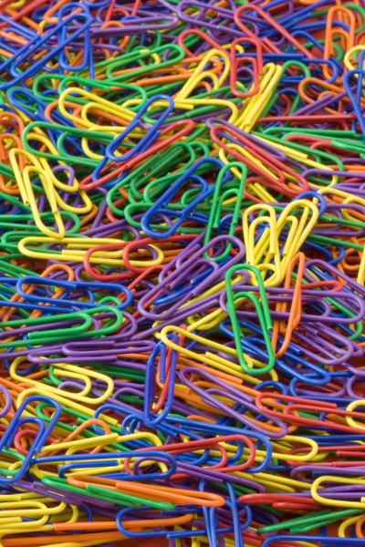
Organize into groups
Which of the following is an FCC rule regarding power levels used in the amateur bands, under normal, non-distress circumstances?
While not exceeding the maximum power permitted on a given band, use the minimum power necessary to carry out the desired communication
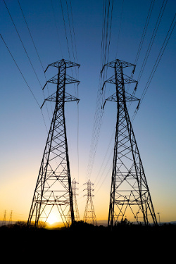
Use the least power needed.
Which of the following is a guideline to use when choosing an operating frequency for calling CQ?
Listen first to be sure that no one else is using the frequency
Ask if the frequency is in use
Make sure you are in your assigned band
What is the term used to describe an amateur station that is transmitting and receiving on the same frequency?
Simplex communication
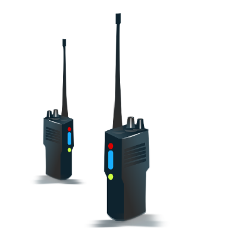
Simplex = Radio to radio, direct communication
What is the term used to describe the use of a sub-audible tone transmitted with normal voice audio to open the squelch of a receiver?
CTCSS
Continuous Tone Coded Squelch System
What is squelch?
Which of the following describes the muting of receiver audio controlled solely by the presence or absence of an RF signal?
Carrier squelch
Which of the following common problems might cause you to be able to hear but not access a repeater even when transmitting with the proper offset?
The repeater receiver may require an audio tone burst for access
The repeater receiver may require a CTCSS tone for access
The repeater receiver may require a DCS tone sequence for access
What determines the amount of deviation of an FM (as opposed to PM) signal?
The amplitude of the modulating signal
What happens when the deviation of an FM transmitter is increased?
Its signal occupies more bandwidth
What could cause your FM signal to interfere with stations on nearby frequencies?
Microphone gain too high, causing over-deviation
Which of the following applies when two stations transmitting on the same frequency interfere with each other?
Common courtesy should prevail, but no one has absolute right to an amateur frequency
Which of the following methods is encouraged by the FCC when identifying your station when using phone?
Use of a phonetic alphabet
Which Q signal indicates that you are receiving interference from other stations?
QRM
Which Q signal indicates that you are changing frequency?
QSY
Under what circumstances should you consider communicating via simplex rather than a repeater?
When the stations can communicate directly without using a repeater
Which of the following is true of the use of SSB phone in amateur bands above 50 MHz?
It is permitted in at least some portion of all the amateur bands above 50 MHz
When do the FCC rules NOT apply to the operation of an amateur station?
Never, FCC rules always apply
What is one way to recharge a 12-volt lead-acid station battery if the commercial power is out?
Connect the battery in parallel with a vehicle’s battery and run the engine
What should be done to insure that voice message traffic containing proper names and unusual words are copied correctly by the receiving station?
Such words and terms should be spelled out using a standard phonetic alphabet
What do RACES and ARES have in common?
Both organizations may provide communications during emergencies
Which of the following describes the Radio Amateur Civil Emergency Service (RACES)?
A radio service using amateur frequencies for emergency management or civil defense communications
A radio service using amateur stations for emergency management or civil defense communications
An emergency service using amateur operators certified by a civil defense organization as being enrolled in that organization
Which of the following is an accepted practice to get the immediate attention of a net control station when reporting an emergency?
Begin your transmission by saying "Priority" or "Emergency" followed by your call sign
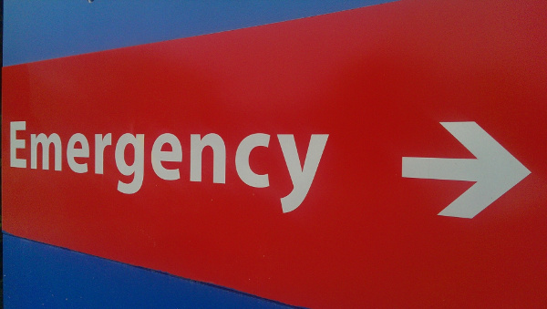
Which of the following is an accepted practice for an amateur operator who has checked into an emergency traffic net?
Remain on frequency without transmitting until asked to do so by the net control station
Which of the following is a characteristic of good emergency traffic handling?
Passing messages exactly as received
Are amateur station control operators ever permitted to operate outside the frequency privileges of their license class?
Yes, but only if necessary in situations involving the immediate safety of human life or protection of property
What is the preamble in a formal traffic message?
The information needed to track the message as it passes through the amateur radio traffic handling system

What is meant by the term “check” in reference to a formal traffic message?
The check is a count of the number of words or word equivalents in the text portion of the message
What is the Amateur Radio Emergency Service (ARES)?
Licensed amateurs who have voluntarily registered their qualifications and equipment for communications duty in the public service
What should you do if another operator reports that your station’s 2 meter signals were strong just a moment ago, but now they are weak or distorted?
Try moving a few feet or changing the direction of your antenna if possible, as reflections may be causing multi-path distortion
Why are UHF signals often more effective from inside buildings than VHF signals?
The shorter wavelength allows them to more easily penetrate the structure of buildings
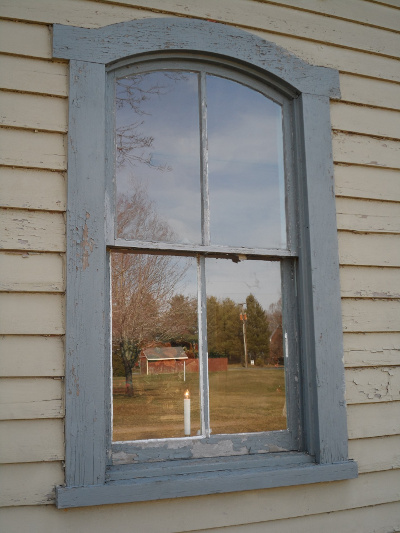 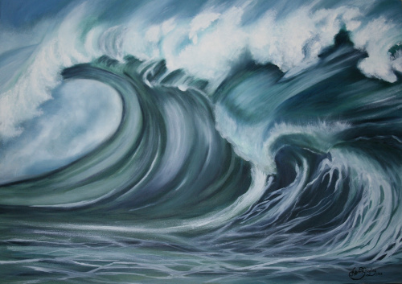
What antenna polarization is normally used for long-distance weak-signal CW and SSB contacts using the VHF and UHF bands?
Horizontal
What can happen if the antennas at opposite ends of a VHF or UHF line of sight radio link are not using the same polarization?
Signals could be significantly weaker
When using a directional antenna, how might your station be able to access a distant repeater if buildings or obstructions are blocking the direct line of sight path?
Try to find a path that reflects signals to the repeater
What term is commonly used to describe the rapid fluttering sound sometimes heard from mobile stations that are moving while transmitting?
Picket fencing
What type of wave carries radio signals between transmitting and receiving stations?
Electromagnetic
Which of the following is a likely cause of irregular fading of signals received by ionospheric reflection?
Random combining of signals arriving via different paths
Which of the following results from the fact that skip signals refracted from the ionosphere are elliptically polarized?
Either vertically or horizontally polarized antennas may be used for transmission or reception
What may occur if data signals propagate over multiple paths?
Error rates are likely to increase
Didn't you catch what we all said?
Which part of the atmosphere enables the propagation of radio signals around the world?
The ionosphere
What is the name for the distance a radio wave travels during one complete cycle?
Wavelength
What property of a radio wave is used to describe its polarization?
The orientation of the electric field
What are the two components of a radio wave?
Electric and magnetic fields
How fast does a radio wave travel through free space?
At the speed of light
300,000,000 m/s (186,282 miles/second)
How does the wavelength of a radio wave relate to its frequency?
The wavelength gets shorter as the frequency increases
What is the formula for converting frequency to approximate wavelength in meters?
Wavelength in meters equals 300 divided by frequency in megahertz
speed of wave = frequency * wavelength
What property of radio waves is often used to identify the different frequency bands?
The approximate wavelength
What are the frequency limits of the VHF spectrum?
30 to 300 MHz
What are the frequency limits of the UHF spectrum?
300 to 3000 MHz
What frequency range is referred to as HF?
3 to 30 MHz
What is the approximate velocity of a radio wave as it travels through free space?
300,000,000 meters per second
(speed of light!)
Why are direct (not via a repeater) UHF signals rarely heard from stations outside your local coverage area?
UHF signals are usually not reflected by the ionosphere
Which of the following might be happening when VHF signals are being received from long distances?
Signals are being refracted from a sporadic E layer
What is a characteristic of VHF signals received via auroral reflection?
The signals exhibit rapid fluctuations of strength and often sound distorted
Which of the following propagation types is most commonly associated with occasional strong over-the-horizon signals on the 10, 6, and 2 meter bands?
Sporadic E
Which of the following effects might cause radio signals to be heard despite obstructions between the transmitting and receiving stations?
Knife-edge diffraction
What mode is responsible for allowing over-the-horizon VHF and UHF communications to ranges of approximately 300 miles on a regular basis?
Tropospheric scatter
What band is best suited for communicating via meteor scatter?
6 meters
What causes tropospheric ducting?
Temperature inversions in the atmosphere
What is generally the best time for long-distance 10 meter band propagation via the F layer?
From dawn to shortly after sunset during periods of high sunspot activity
What is the radio horizon?
The distance over which two stations can communicate by direct path
Why do VHF and UHF radio signals usually travel somewhat farther than the visual line of sight distance between two stations?
The Earth seems less curved to radio waves than to light
Which of the following bands may provide long distance communications during the peak of the sunspot cycle?
Six or ten meters
Which of the following is true concerning the microphone connectors on amateur transceivers?
Some connectors include push-to-talk and voltages for powering the microphone
How might a computer be used as part of an amateur radio station?
For logging contacts and contact information
For sending and/or receiving CW
For generating and decoding digital signals
(CW = Continuous wave, or morse code)
Which is a good reason to use a regulated power supply for communications equipment?
It prevents voltage fluctuations from reaching sensitive circuits
Where must a filter be installed to reduce harmonic emissions from your station?
Between the transmitter and the antenna
Where should an in-line SWR meter be connected to monitor the standing wave ratio of the station antenna system?
In series with the feed line, between the transmitter and antenna
Which of the following would be connected between a transceiver and computer in a packet radio station?
Terminal node controller
How is a computer’s sound card used when conducting digital communications using a computer?
The sound card provides audio to the microphone input and converts received audio to digital form
Which type of conductor is best to use for RF grounding?
Flat strap
Which of the following could you use to cure distorted audio caused by RF current flowing on the shield of a microphone cable?
Ferrite choke
What is the source of a high-pitched whine that varies with engine speed in a mobile transceiver’s receive audio?
The alternator
Where should the negative return connection of a mobile transceiver's power cable be connected?
At the battery or engine block ground strap
What could be happening if another operator reports a variable high-pitched whine on the audio from your mobile transmitter?
Noise on the vehicle’s electrical system is being transmitted along with your speech audio
What may happen if a transmitter is operated with the microphone gain set too high?
The output signal might become distorted
Which of the following can be used to enter the operating frequency on a modern transceiver?
The keypad or VFO knob
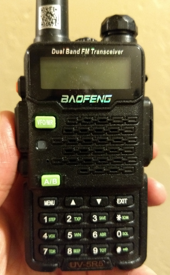
What is the purpose of the squelch control on a transceiver?
To mute receiver output noise when no signal is being received
What is a way to enable quick access to a favorite frequency on your transceiver?
Store the frequency in a memory channel
Which of the following would reduce ignition interference to a receiver?
Turn on the noise blanker
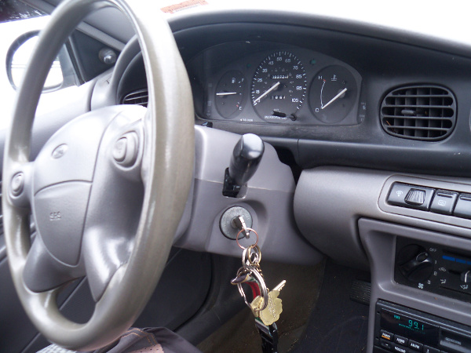
Which of the following controls could be used if the voice pitch of a single-sideband signal seems too high or low?
The receiver RIT or clarifier
What does the term “RIT” mean?
Receiver Incremental Tuning
What is the advantage of having multiple receive bandwidth choices on a multimode transceiver?
Permits noise or interference reduction by selecting a bandwidth matching the mode
Select what you want to hear.
Which of the following is an appropriate receive filter bandwidth to select in order to minimize noise and interference for SSB reception?
2400 Hz
Which of the following is an appropriate receive filter bandwidth to select in order to minimize noise and interference for CW reception?
500 Hz
Which of the following describes the common meaning of the term "repeater offset"?
The difference between the repeater’s transmit and receive frequencies
What is the function of automatic gain control or AGC?
To keep received audio relatively constant
Electrical current is measured in which of the following units?
Amperes
Electrical power is measured in which of the following units?
Watts
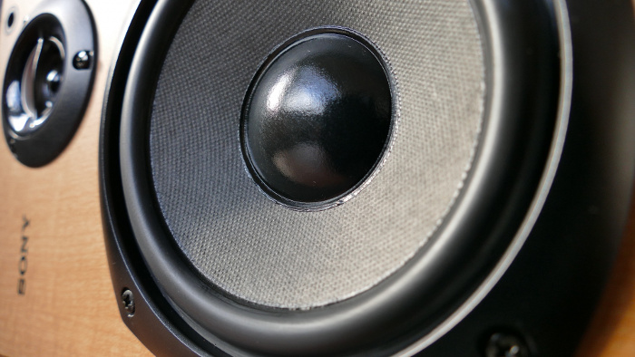
What is the name for the flow of electrons in an electric circuit?
Current
What is the name for a current that flows only in one direction?
Direct current
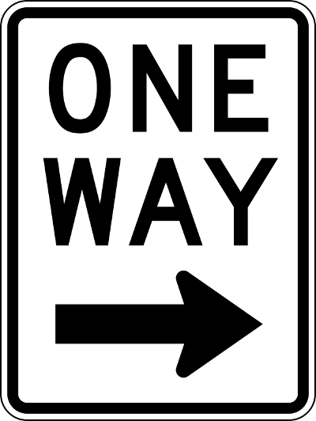
How much voltage does a mobile transceiver usually require?
About 12 volts
Which of the following is a good electrical conductor?
Copper
Electricity will flow through these.
Which of the following is a good electrical insulator?
Glass
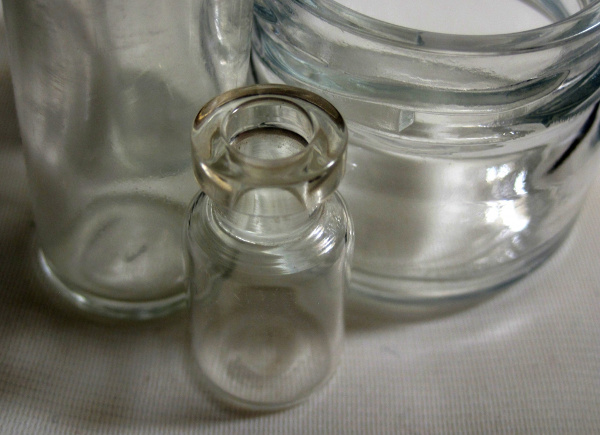
Will electricity flow through this? No.
What is the name for a current that reverses direction on a regular basis?
Alternating current
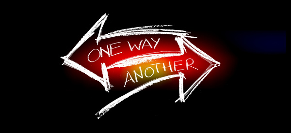
Back and forth.
Which term describes the rate at which electrical energy is used?
Power
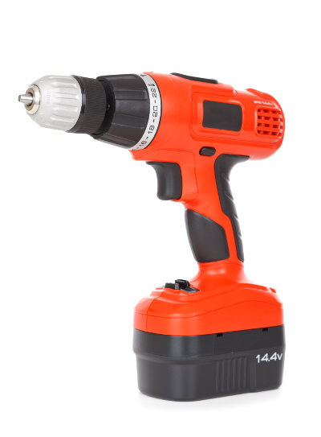
What is the basic unit of electromotive force?
The volt
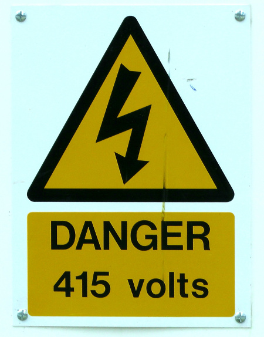
What term describes the number of times per second that an alternating current reverses direction?
Frequency
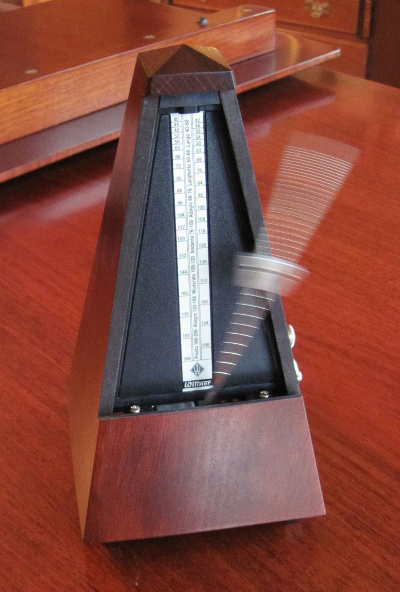
How many milliamperes is 1.5 amperes?
1,500 milliamperes
What is another way to specify a radio signal frequency of 1,500,000 hertz?
1500 kHz
How many volts are equal to one kilovolt?
One thousand volts
How many volts are equal to one microvolt?
One one-millionth of a volt
Which of the following is equivalent to 500 milliwatts?
0.5 watts
If an ammeter calibrated in amperes is used to measure a 3000-milliampere current, what reading would it show?
3 amperes
If a frequency readout calibrated in megahertz shows a reading of 3.525 MHz, what would it show if it were calibrated in kilohertz?
3525 kHz
How many microfarads are 1,000,000 picofarads?
1 microfarad
What is the approximate amount of change, measured in decibels (dB), of a power increase from 5 watts to 10 watts?
3 dB
What is the approximate amount of change, measured in decibels (dB), of a power decrease from 12 watts to 3 watts?
-6 dB
What is the approximate amount of change, measured in decibels (dB), of a power increase from 20 watts to 200 watts?
10 dB
Which of the following frequencies is equal to 28,400 kHz?
28.400 MHz
If a frequency readout shows a reading of 2425 MHz, what frequency is that in GHz?
2.425 GHz
What is the ability to store energy in an electric field called?
Capacitance
What is the basic unit of capacitance?
The farad
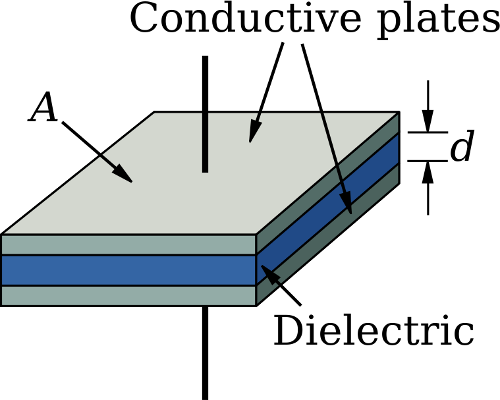
What is the ability to store energy in a magnetic field called?
Inductance
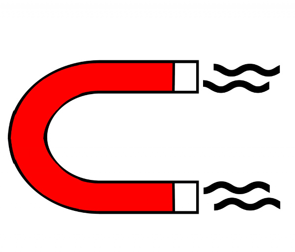
What is the basic unit of inductance?
The henry
What is the unit of frequency?
Hertz
What does the abbreviation “RF” refer to?
Radio frequency signals of all types
What is a usual name for electromagnetic waves that travel through space?
Radio waves
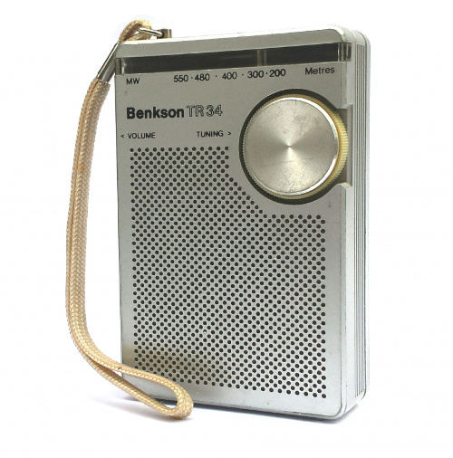
What is the formula used to calculate electrical power in a DC circuit?
Power (P) equals voltage (E) multiplied by current (I)
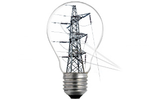
Power = voltage * current
P = VI
How much power is being used in a circuit when the applied voltage is 13.8 volts DC and the current is 10 amperes?
138 watts
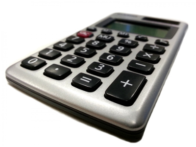
How much power is being used in a circuit when the applied voltage is 12 volts DC and the current is 2.5 amperes?
30 watts
How many amperes are flowing in a circuit when the applied voltage is 12 volts DC and the load is 120 watts?
10 amperes
What is meant by the term impedance?
It is a measure of the opposition to AC current flow in a circuit
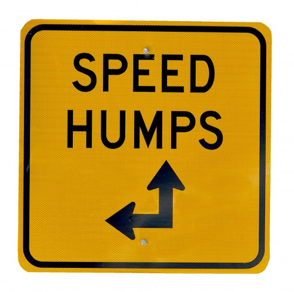.
What are the units of impedance?
Ohms
What formula is used to calculate current in a circuit?
Current (I) equals voltage (E) divided by resistance (R)
V = IR
What formula is used to calculate voltage in a circuit?
Voltage (E) equals current (I) multiplied by resistance (R)
V = IR
What formula is used to calculate resistance in a circuit?
Resistance (R) equals voltage (E) divided by current (I)
V = IR
What is the resistance of a circuit in which a current of 3 amperes flows through a resistor connected to 90 volts?
30 ohms
What is the resistance in a circuit for which the applied voltage is 12 volts and the current flow is 1.5 amperes?
8 ohms
What is the resistance of a circuit that draws 4 amperes from a 12-volt source?
3 ohms
What is the current flow in a circuit with an applied voltage of 120 volts and a resistance of 80 ohms?
1.5 amperes
What is the current flowing through a 100-ohm resistor connected across 200 volts?
2 amperes
What is the current flowing through a 24-ohm resistor connected across 240 volts?
10 amperes
What is the voltage across a 2-ohm resistor if a current of 0.5 amperes flows through it?
1 volt
What is the voltage across a 10-ohm resistor if a current of 1 ampere flows through it?
10 volts
What is the voltage across a 10-ohm resistor if a current of 2 amperes flows through it?
20 volts
What electrical component is used to oppose the flow of current in a DC circuit?
Resistor
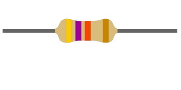
What type of component is often used as an adjustable volume control?
Potentiometer
What electrical parameter is controlled by a potentiometer?
Resistance
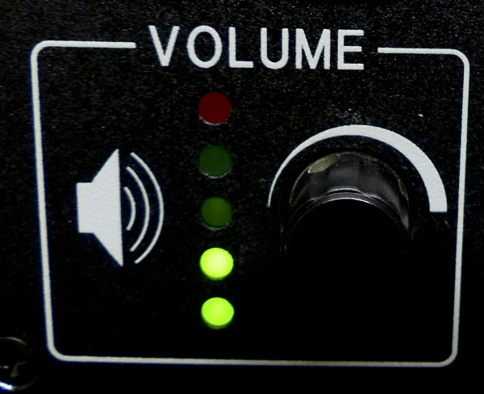
What electrical component stores energy in an electric field?
Capacitor
What type of electrical component consists of two or more conductive surfaces separated by an insulator?
Capacitor
What type of electrical component stores energy in a magnetic field?
Inductor
What electrical component is usually composed of a coil of wire?
Inductor
What electrical component is used to connect or disconnect electrical circuits?
Switch
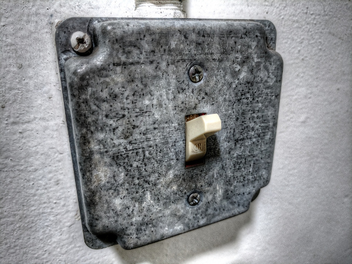
What electrical component is used to protect other circuit components from current overloads?
Fuse
Which of the following battery types is rechargeable?
Nickel-metal hydride
Lithium-ion
Lead-acid gel-cell
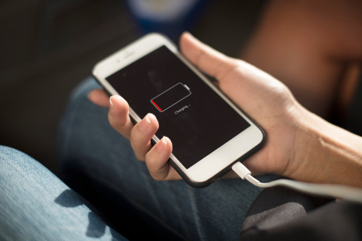
Which of the following battery types is not rechargeable?
Carbon-zinc
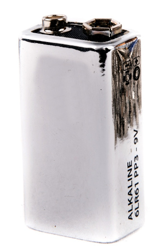
What class of electronic components is capable of using a voltage or current signal to control current flow?
Transistors
What electronic component allows current to flow in only one direction?
Diode
Which of these components can be used as an electronic switch or amplifier?
Transistor
Which of the following components can be made of three layers of semiconductor material?
Transistor
Which of the following electronic components can amplify signals?
Transistor
How is the cathode lead of a semiconductor diode usually identified?
With a stripe
What does the abbreviation LED stand for?
Light Emitting Diode
What does the abbreviation FET stand for?
Field Effect Transistor
What are the names of the two electrodes of a diode?
Anode and cathode
What are the three electrodes of a PNP or NPN transistor?
Emitter, base, and collector
What at are the three electrodes of a field effect transistor?
Source, gate, and drain
What is the term that describes a transistor's ability to amplify a signal?
Gain
What is the name for standardized representations of components in an electrical wiring diagram?
Schematic symbols
What is component 1 in figure T1?
Resistor
What is component 2 in figure T1?
Transistor
What is component 3 in figure T1?
Lamp
What is component 4 in figure T1?
Battery
What is component 6 in figure T2?
Capacitor
What is component 8 in figure T2?
Light emitting diode
What is component 9 in figure T2?
Variable resistor
What is component 4 in figure T2?
Transformer
What is component 3 in figure T3?
Variable inductor
What is component 4 in figure T3?
Antenna
What do the symbols on an electrical circuit schematic diagram represent?
Electrical components
Which of the following is accurately represented in electrical circuit schematic diagrams?
The way components are interconnected
Which of the following devices or circuits changes an alternating current into a varying direct current signal?
Rectifier
What best describes a relay?
A switch controlled by an electromagnet
What type of switch is represented by component 3 in figure T2?
Single-pole single-throw
Which of the following can be used to display signal strength on a numeric scale?
Meter
What type of circuit controls the amount of voltage from a power supply?
Regulator
What component is commonly used to change 120V AC house current to a lower AC voltage for other uses?
Transformer
Which of the following is commonly used as a visual indicator?
LED
Which of the following is used together with an inductor to make a tuned circuit?
Capacitor
What is the name of a device that combines several semiconductors and other components into one package?
Integrated circuit
What is the function of component 2 in Figure T1?
Control the flow of current
What is a simple resonant or tuned circuit?
An inductor and a capacitor connected in series or parallel to form a filter
Which of the following is a common reason to use shielded wire?
To prevent coupling of unwanted signals to or from the wire
Which term describes the ability of a receiver to detect the presence of a signal?
Sensitivity
What is a transceiver?
A unit combining the functions of a transmitter and a receiver
Which of the following is used to convert a radio signal from one frequency to another?
Mixer
Which term describes the ability of a receiver to discriminate between multiple signals?
Selectivity
What is the name of a circuit that generates a signal of a desired frequency?
Oscillator
What device takes the output of a low-powered 28 MHz SSB exciter and produces a 222 MHz output signal?
Transverter
What is meant by term “PTT”?
The push to talk function which switches between receive and transmit
Which of the following describes combining speech with an RF carrier signal?-
Modulation
Which of the following devices is most useful for VHF weak-signal communication?
A multi-mode VHF transceiver
What device increases the low-power output from a handheld transceiver?
An RF power amplifier
Where is an RF preamplifier installed?
Between the antenna and receiver
What can you do if you are told your FM handheld or mobile transceiver is over-deviating?
Talk farther away from the microphone
What would cause a broadcast AM or FM radio to receive an amateur radio transmission unintentionally?
The receiver is unable to reject strong signals outside the AM or FM band
Which of the following may be a cause of radio frequency interference?
Fundamental overload
Harmonics
Spurious emissions
Which of the following is a way to reduce or eliminate interference by an amateur transmitter to a nearby telephone?
Put a RF filter on the telephone
How can overload of a non-amateur radio or TV receiver by an amateur signal be reduced or eliminated?
Block the amateur signal with a filter at the antenna input of the affected receiver
Which of the following actions should you take if a neighbor tells you that your station’s transmissions are interfering with their radio or TV reception?
Make sure that your station is functioning properly and that it does not cause interference to your own radio or television when it is tuned to the same channel
Which of the following may be useful in correcting a radio frequency interference problem?
Snap-on ferrite chokes
Low-pass and high-pass filters
Band-reject and band-pass filters
What should you do if something in a neighbor’s home is causing harmful interference to your amateur station?
Work with your neighbor to identify the offending device
Politely inform your neighbor about the rules that prohibit the use of devices which cause interference
Check your station and make sure it meets the standards of good amateur practice
What is a Part 15 device?
An unlicensed device that may emit low powered radio signals on frequencies used by a licensed service
What might be the problem if you receive a report that your audio signal through the repeater is distorted or unintelligible?
Your transmitter may be slightly off frequency
Your batteries may be running low
You could be in a bad location
What is a symptom of RF feedback in a transmitter or transceiver?
Reports of garbled, distorted, or unintelligible transmissions
What might be the first step to resolve cable TV interference from your ham radio transmission?
Be sure all TV coaxial connectors are installed properly
What is the primary purpose of a dummy load?
To prevent the radiation of signals when making tests
Which of the following instruments can be used to determine if an antenna is resonant at the desired operating frequency?
An antenna analyzer
What, in general terms, is standing wave ratio (SWR)?
A measure of how well a load is matched to a transmission line
What reading on an SWR meter indicates a perfect impedance match between the antenna and the feed line?
1 to 1
What is the approximate SWR value above which the protection circuits in most solid-state transmitters begin to reduce transmitter power?
2 to 1
What does an SWR reading of 4:1 indicate?
Impedance mismatch
What happens to power lost in a feed line?
It is converted into heat
What instrument other than an SWR meter could you use to determine if a feed line and antenna are properly matched?
Directional wattmeter
Which of the following is the most common cause for failure of coaxial cables?
Moisture contamination
Why should the outer jacket of coaxial cable be resistant to ultraviolet light?
Ultraviolet light can damage the jacket and allow water to enter the cable
What is a disadvantage of air core coaxial cable when compared to foam or solid dielectric types?
It requires special techniques to prevent water absorption
Which of the following is a common use of coaxial cable?
Carrying RF signals between a radio and antenna
What does a dummy load consist of?
A non-inductive resistor and a heat sink
Which instrument would you use to measure electric potential or electromotive force?
A voltmeter
What is the correct way to connect a voltmeter to a circuit?
In parallel with the circuit
How is an ammeter usually connected to a circuit?
In series with the circuit
Which instrument is used to measure electric current?
An ammeter
What instrument is used to measure resistance?
An ohmmeter
Which of the following might damage a multimeter?
Attempting to measure voltage when using the resistance setting
Which of the following measurements are commonly made using a multimeter?
Voltage and resistance
Which of the following types of solder is best for radio and electronic use?
Rosin-core solder
What is the characteristic appearance of a cold solder joint?
A grainy or dull surface
What is probably happening when an ohmmeter, connected across an unpowered circuit, initially indicates a low resistance and then shows increasing resistance with time?
The circuit contains a large capacitor
Which of the following precautions should be taken when measuring circuit resistance with an ohmmeter?
Ensure that the circuit is not powered
Which of the following precautions should be taken when measuring high voltages with a voltmeter?
Ensure that the voltmeter and leads are rated for use at the voltages to be measured
Which of the following is a form of amplitude modulation?
Single sideband
What type of modulation is most commonly used for VHF packet radio transmissions?
FM
Which type of voice mode is most often used for long-distance (weak signal) contacts on the VHF and UHF bands?
SSB
Which type of modulation is most commonly used for VHF and UHF voice repeaters?
FM
Which of the following types of emission has the narrowest bandwidth?
CW
Which sideband is normally used for 10 meter HF, VHF and UHF single-sideband communications?
Upper sideband
What is the primary advantage of single sideband over FM for voice transmissions?
SSB signals have narrower bandwidth
What is the approximate bandwidth of a single sideband voice signal?
3 kHz
What is the approximate bandwidth of a VHF repeater FM phone signal?
Between 10 and 15 kHz
What is the typical bandwidth of analog fast-scan TV transmissions on the 70 cm band?
About 6 MHz
What is the approximate maximum bandwidth required to transmit a CW signal?
150 Hz
Who may be the control operator of a station communicating through an amateur satellite or space station?
Any amateur whose license privileges allow them to transmit on the satellite uplink frequency
How much transmitter power should be used on the uplink frequency of an amateur satellite or space station?
The minimum amount of power needed to complete the contact
Which of the following are provided by satellite tracking programs?
All of these answers are correct
Which amateur stations may make contact with an amateur station on the International Space Station using 2 meter and 70 cm band amateur radio frequencies?
Any amateur holding a Technician or higher class license
What is a satellite beacon?
A transmission from a space station that contains information about a satellite
Which of the following are inputs to a satellite tracking program?
The Keplerian elements
With regard to satellite communications, what is Doppler shift?
An observed change in signal frequency caused by relative motion between the satellite and the earth station
What is meant by the statement that a satellite is operating in mode U/V?
The satellite uplink is in the 70 cm band and the downlink is in the 2 meter band
What causes spin fading when referring to satellite signals?
Rotation of the satellite and its antennas
What do the initials LEO tell you about an amateur satellite?
The satellite is in a Low Earth Orbit
What is a commonly used method of sending signals to and from a digital satellite?
FM Packet
Which of the following methods is used to locate sources of noise interference or jamming?
Radio direction finding
Which of these items would be useful for a hidden transmitter hunt?
A directional antenna
What popular operating activity involves contacting as many stations as possible during a specified period of time?
Contesting
Which of the following is good procedure when contacting another station in a radio contest?
Send only the minimum information needed for proper identification and the contest exchange
What is a grid locator?
A letter-number designator assigned to a geographic location
How is access to an IRLP node accomplished?
By using DTMF signals
What is the maximum power allowed when transmitting telecommand signals to radio controlled models?
1 watt
What is required in place of on-air station identification when sending signals to a radio control model using amateur frequencies?
A label indicating the licensee’s name, call sign and address must be affixed to the transmitter
How might you obtain a list of active nodes that use VoIP?
From a repeater directory
How do you select a specific IRLP node when using a portable transceiver?
Use the keypad to transmit the IRLP node ID
What name is given to an amateur radio station that is used to connect other amateur stations to the Internet?
A gateway
What is meant by Voice Over Internet Protocol (VoIP) as used in amateur radio?
A method of delivering voice communications over the Internet using digital techniques
What is the Internet Radio Linking Project (IRLP)?
A technique to connect amateur radio systems, such as repeaters, via the Internet using Voice Over Internet Protocol
Which of the following is an example of a digital communications method?
Packet
PSK31
MFSK
What does the term “APRS” mean?
Automatic Packet Reporting System
Which of the following devices provides data to the transmitter when sending automatic position reports from a mobile amateur radio station?
A Global Positioning System receiver
What type of transmission is indicated by the term NTSC?
An analog fast scan color TV signal
Which of the following is an application of APRS (Automatic Packet Reporting System)?
Providing real time tactical digital communications in conjunction with a map showing the locations of stations
What does the abbreviation PSK mean?
Phase Shift Keying
What is PSK31?
A low-rate data transmission mode
Which of the following may be included in packet transmissions?
A check sum which permits error detection
A header which contains the call sign of the station to which the information is being sent
Automatic repeat request in case of error
What code is used when sending CW in the amateur bands?
International Morse
Which of the following can be used to transmit CW in the amateur bands?
Straight Key
Electronic Keyer
Computer Keyboard
What is an ARQ transmission system?
A digital scheme whereby the receiving station detects errors and sends a request to the sending station to retransmit the information
What is a beam antenna?
An antenna that concentrates signals in one direction
Which of the following is true regarding vertical antennas?
The electric field is perpendicular to the Earth
Which of the following describes a simple dipole mounted so the conductor is parallel to the Earth's surface?
A horizontally polarized antenna
What is a disadvantage of the “rubber duck” antenna supplied with most handheld radio transceivers?
It does not transmit or receive as effectively as a full-sized antenna
How would you change a dipole antenna to make it resonant on a higher frequency?
Shorten it
What type of antennas are the quad, Yagi, and dish?
Directional antennas
What is a good reason not to use a “rubber duck” antenna inside your car?
Signals can be significantly weaker than when it is outside of the vehicle
What is the approximate length, in inches, of a quarter-wavelength vertical antenna for 146 MHz?
19
What is the approximate length, in inches, of a 6 meter 1/2-wavelength wire dipole antenna?
112
In which direction is the radiation strongest from a half-wave dipole antenna in free space?
Broadside to the antenna
What is meant by the gain of an antenna?
The increase in signal strength in a specified direction when compared to a reference antenna
What is a reason to use a properly mounted 5/8 wavelength antenna for VHF or UHF mobile service?
It offers a lower angle of radiation and more gain than a 1/4 wavelength antenna and usually provides improved coverage
Why are VHF or UHF mobile antennas often mounted in the center of the vehicle roof?
A roof mounted antenna normally provides the most uniform radiation pattern
Which of the following terms describes a type of loading when referring to an antenna?
Inserting an inductor in the radiating portion of the antenna to make it electrically longer
Why is it important to have a low SWR in an antenna system that uses coaxial cable feed line?
To allow the efficient transfer of power and reduce losses
What is the impedance of the most commonly used coaxial cable in typical amateur radio installations?
50 ohms
Why is coaxial cable used more often than any other feed line for amateur radio antenna systems?
It is easy to use and requires few special installation considerations
What does an antenna tuner do?
It matches the antenna system impedance to the transceiver's output impedance
What generally happens as the frequency of a signal passing through coaxial cable is increased?
The loss increases
Which of the following connectors is most suitable for frequencies above 400 MHz?
A Type N connector
Which of the following is true of PL-259 type coax connectors?
They are commonly used at HF frequencies
Why should coax connectors exposed to the weather be sealed against water intrusion?
To prevent an increase in feed line loss
What might cause erratic changes in SWR readings?
A loose connection in an antenna or a feed line
What electrical difference exists between the smaller RG-58 and larger RG-8 coaxial cables?
RG-8 cable has less loss at a given frequency
Which of the following types of feed line has the lowest loss at VHF and UHF?
Air-insulated hard line
Which of the following is a safety hazard of a 12-volt storage battery?
Shorting the terminals can cause burns, fire, or an explosion
How does current flowing through the body cause a health hazard?
By heating tissue
It disrupts the electrical functions of cells
It causes involuntary muscle contractions
What is connected to the green wire in a three-wire electrical AC plug?
Safety ground
What is the purpose of a fuse in an electrical circuit?
To interrupt power in case of overload
Why is it unwise to install a 20-ampere fuse in the place of a 5-ampere fuse?
Excessive current could cause a fire
What is a good way to guard against electrical shock at your station?
Use three-wire cords and plugs for all AC powered equipment
Connect all AC powered station equipment to a common safety ground
Use a circuit protected by a ground-fault interrupter
Which of these precautions should be taken when installing devices for lightning protection in a coaxial cable feed line?
Ground all of the protectors to a common plate which is in turn connected to an external ground
What safety equipment should always be included in home-built equipment that is powered from 120V AC power circuits?
A fuse or circuit breaker in series with the AC hot conductor
What kind of hazard is presented by a conventional 12-volt storage battery?
Explosive gas can collect if not properly vented
What can happen if a lead-acid storage battery is charged or discharged too quickly?
The battery could overheat and give off flammable gas or explode
What kind of hazard might exist in a power supply when it is turned off and disconnected?
You might receive an electric shock from the charged stored in large capacitors
When should members of a tower work team wear a hard hat and safety glasses?
At all times when any work is being done on the tower
What is a good precaution to observe before climbing an antenna tower?
Put on a climbing harness and safety glasses
Under what circumstances is it safe to climb a tower without a helper or observer?
Never
Which of the following is an important safety precaution to observe when putting up an antenna tower?
Look for and stay clear of any overhead electrical wires
What is the purpose of a gin pole?
To lift tower sections or antennas
What is the minimum safe distance from a power line to allow when installing an antenna?
So that if the antenna falls unexpectedly, no part of it can come closer than 10 feet to the power wires
Which of the following is an important safety rule to remember when using a crank-up tower?
This type of tower must never be climbed unless it is in the fully retracted position
What is considered to be a proper grounding method for a tower?
Separate eight-foot long ground rods for each tower leg, bonded to the tower and each other
Why should you avoid attaching an antenna to a utility pole?
The antenna could contact high-voltage power wires
Which of the following is true concerning grounding conductors used for lightning protection?
Sharp bends must be avoided
Which of the following establishes grounding requirements for an amateur radio tower or antenna?
Local electrical codes
Which of the following is good practice when installing ground wires on a tower for lightning protection?
Ensure that connections are short and direct
What type of radiation are VHF and UHF radio signals?
Non-ionizing radiation
Which of the following frequencies has the lowest value for Maximum Permissible Exposure limit?
50 MHz
What is the maximum power level that an amateur radio station may use at VHF frequencies before an RF exposure evaluation is required?
50 watts PEP at the antenna
What factors affect the RF exposure of people near an amateur station antenna?
Frequency and power level of the RF field
Distance from the antenna to a person
Radiation pattern of the antenna
Why do exposure limits vary with frequency?
The human body absorbs more RF energy at some frequencies than at others
Which of the following is an acceptable method to determine that your station complies with FCC RF exposure regulations?
By calculation based on FCC OET Bulletin 65
By calculation based on computer modeling
By measurement of field strength using calibrated equipment
What could happen if a person accidentally touched your antenna while you were transmitting?
They might receive a painful RF burn
Which of the following actions might amateur operators take to prevent exposure to RF radiation in excess of FCC-supplied limits?
Relocate antennas
How can you make sure your station stays in compliance with RF safety regulations?
By re-evaluating the station whenever an item of equipment is changed
Why is duty cycle one of the factors used to determine safe RF radiation exposure levels?
It affects the average exposure of people to radiation
What is the definition of duty cycle during the averaging time for RF exposure?
The percentage of time that a transmitter is transmitting
How does RF radiation differ from ionizing radiation (radioactivity)?
RF radiation does not have sufficient energy to cause genetic damage
If the averaging time for exposure is 6 minutes, how much power density is permitted if the signal is present for 3 minutes and absent for 3 minutes rather than being present for the entire 6 minutes?
2 times as much
Images primary from public domain sources, e.g.:
https://openclipart.org https://pixnio.com http://www.publicdomainpictures.net